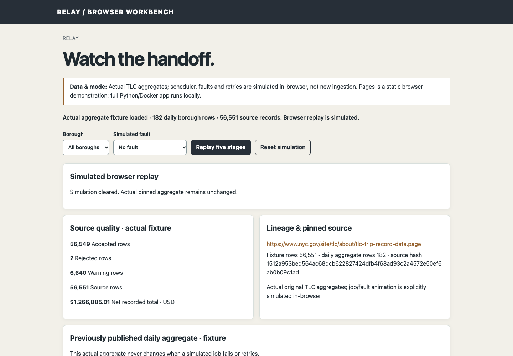
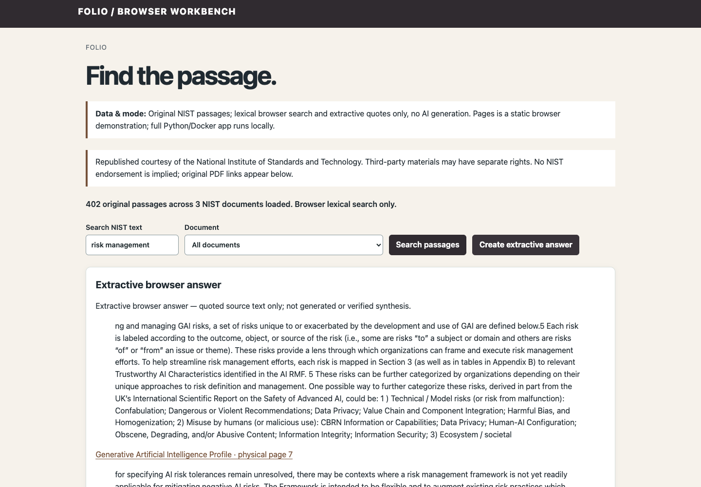
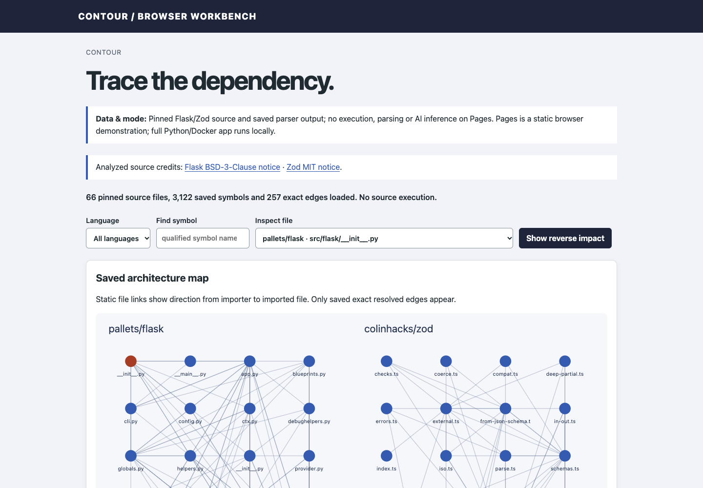

Directory · Contact
Sashank Kuraganti
Senior Data Engineer · Santa Clara, California
Senior Data Engineer · Santa Clara, California
I build data pipelines and lakehouse systems with a clear path from raw data to the checks behind each result.
My work spans software, manufacturing, financial services and commerce. I use Python, SQL and PySpark most.
I care about data you can trace back to where it came from, and monitoring that tells you something useful. I also want to know where a system can fail.
The independent projects below take on the same problems with public data. They're personal work, separate from any employer, and the results are there for you to inspect.
Seven independent projects. Try a browser demo, or run the full app from its source. The apps run locally; optional model features may use a remote service.
Showing 7 of 7 projects
No projects match this filter.
Data pipeline · data-pipeline-monitor
Scheduled, bounded ingestion of NYC TLC trip data with a quality quarantine, lineage and checkpoint retry.
Python · SQLite
Relay schedules ingestion of a pinned TLC monthly file and taxi-zone lookup. Invalid rows are quarantined with a reason; accepted rows retain lineage back to the source. An unchanged file is a no-op.
I checked recovery from a saved checkpoint at row 5,000, so a failed run resumes instead of starting over.
What the demo is: the Pages version simulates the queue and retries in the browser over the real aggregates. The full backend runs locally.

Retrieval · private-ai-knowledge-engine
Document search with lexical, latent and hybrid retrieval, citation checks, and incremental updates and deletion. Evaluated on NIST documents.
Python · SQLite FTS5
Answers cite the passages they came from, and citations are validated against the indexed text. Updating or deleting a document changes the index incrementally.
For 24 frozen questions, the top five matches included the labeled source page for 20 using lexical search, 19 using hybrid search and 17 using latent search. This small retrieval test measures where a passage was found, not answer quality.
What the demo is: the Pages version runs lexical, extractive search over three documents and makes no new model calls. The full backend runs locally, and the model is optional.

Code analysis · ai-codebase-explorer
Parses Python and TypeScript, builds dependency graphs for Flask and Zod, and explains code with links back to the source lines.
Python · TypeScript
Contour estimates change impact from the dependency graph. It reads static imports, not runtime calls, so its impact view is a starting point and not a complete answer.
It never executes the code it analyzes.
What the demo is: the Pages version searches saved parsed output. The full backend runs locally.

Data · personal-spending-tracker
Personal spending from CSV imports, with deterministic categories, recurring-payment candidates and budgets. No bank integration.
Python · SQLite
The practical lesson: imports need to be atomic, and duplicates need deliberate handling.
Locally I tested a 6,567-row research import from MoneyVis. It isn't redistributed because its standalone license is unresolved.
What the demo is: the Pages version uses a synthetic 32-row fixture.
Data · live-earth-dashboard
Ingests USGS and NWS data with deduplication, freshness tracking, watch-radius alerts and map playback.
Python · SQLite · Leaflet
The ingestion uses the actual USGS and NWS sources. Repeated records are deduplicated, and each source shows how fresh its data is.
What the demo is: the Pages version is a captured snapshot. It isn't a live feed, and it isn't a reconstruction of what was known at a past moment.
AI evaluation · ai-agent-evaluation-lab
Tool-planning benchmarks derived from BFCL, with immutable trace checks, replays and synthetic fault probes.
Python
An offline run was repeated three times. Each repeat gave 3 successes, 20 refusals and 2 wrong answers out of 25.
Eight saved model plans are shown separately, with one run per task and policy. That sample is too small to establish a policy winner. These are local planning scores rather than official BFCL results.
What the demo is: the Pages version makes no model or tool calls. Its receipts are simulated.
AI operations · ai-incident-investigator
Injects failures into a sandbox, measures HTTP, logs and spans, then writes cautious, cited hypotheses and repair proposals for a person to review.
Python
Repair proposals are text only and can't be executed. Two of seven planned study conditions produced validated diagnoses. Six reached the model; one failed before inference. These sandbox results do not measure production accuracy.
The local record keeps a mixed slow capture and a failed second capture rather than hiding them.
What the demo is: the Pages version replays recorded results only and runs no inference.
Python, SQL, PySpark, Spark SQL
Databricks, Delta Lake, Delta Live Tables, Unity Catalog
Azure Data Factory, ADLS Gen2, Event Hubs, Azure Monitor
S3, Glue, Kinesis, Redshift
Kafka, Airflow, dbt, Great Expectations
Chunking, embeddings, vector indexing, retrieval evaluation
Prometheus, Grafana, ClickHouse
Git, Docker, CI/CD
– Present
I build Azure Databricks and Delta Lake pipelines for internal product data, organized in Bronze, Silver and Gold layers. Unity Catalog handles access and lineage. Great Expectations and PySpark checks, along with SLA monitoring, keep an eye on the data.
–
Built Python and PySpark ingestion for sensor telemetry from 5,000+ sensor streams, processing JSON into Parquet on Databricks and S3. Prepared equipment logs for RAG: sensitive fields removed, then embeddings, vector indexing, retrieval traces and evaluation. Also worked with Delta Live Tables, ClickHouse, Prometheus and Grafana.
–
Built ingestion for 15+ risk feeds with Azure Data Factory, ADLS Gen2 and Databricks, plus PySpark and SQL transformations. Added dbt tests and SCD Type 2 history, working with Key Vault, RBAC and CI/CD.
–
Built ETL and Kafka and Kinesis ingestion for orders, products and clickstream. Orchestrated jobs in Airflow, tuned Redshift and prepared datasets for Tableau and Power BI.
University of Central Oklahoma ·
Manipal University ·
Directory · Contact
Senior Data Engineer · Santa Clara, California